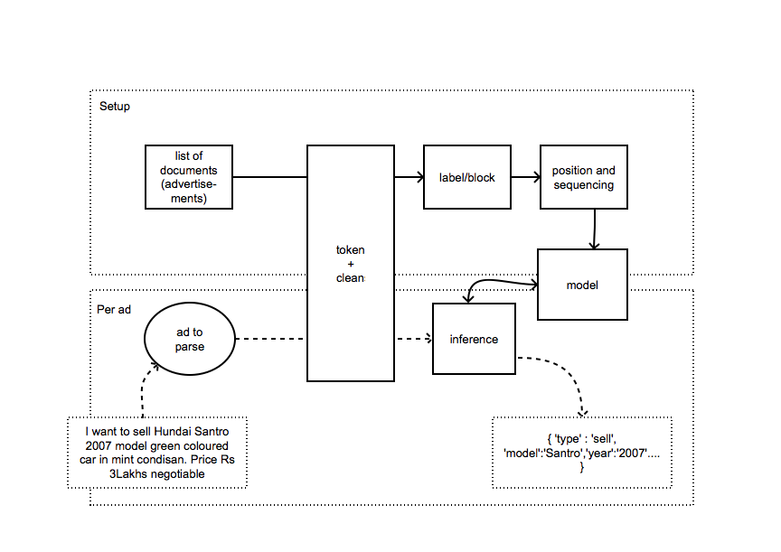

<< work in progress. TODO: sequential model, inference and future work >>
Introduction
There is significant interest in extracting information from unstructured or semi-structured text like classified advertisements, so it can be stored in a query-able form for further analysis. In the specific example case of classified advertisements, used through this set of pages, this can have a variety of applications, from improving user experience, better placements, to creating price prediction tools using machine learning techniques. A classified advertisment can be called a semi-structured document as it generally has the following parts –
- someone is [Contact]
- selling/buying [Type of Ad]
- something [Brand, Model]
- used/new [Year of manufacture]
- features [Color, Condition etc.]
- domain specific features like AC/non-AC, stereo system, seat types etc. [Features]
More often than not, these parts are not placed neatly in order, and advertisements may differ significantly so as to make it harder to model them using a set of Regex parsers. In a test corpus for around 57,000 car selling/buying classified ads, rarely a case where a set structure been followed existed. But there is a (or a limited number of) abstract semi-structure(s) that could be seen. We exploit these to extract information by text segmentation. We follow an unsupervised probabilistic approach called ONDUX1 that helps us build a probabilistic model for classified ads for a domain given enough data. This approach is well suited for semi-structured smaller documents like classified advertisements – we identify known segments in a document using a knowledge base and we use a probabilistic model to identify unknown segments. This probabilistic model is built using a sizeable test corpus.
The following diagram explains the end-to-end process – 
The details are introduced under the following heads, and each has a more explanatory document.
- Tokenisation
- Building a knowledge base
- Blocking and labelling
- Building a Positional model
- Building a Sequencial model
- Inference
Tokenisation
Tokenisation is the process of converting a corpus to a list of advertisements, with each advertisement being a list of significant words. Word significance can be defined in terms of how our analysis can be affected by a word in terms of accuracy of output as well as the performance of our program. For example, we remove language and domain stop words, as well as words which are below a certain length because these words have either negative or zero effect on accuracy and performance. We also perform some data clean up like spell checking, which are detailed here.
Building a knowledge base
The approach we follow to label segments in a sentence is heavily dependent on an existing knowledge base or a dictionary of {label : [words]}. For the example domain, the following dictionary is a simple KB for the “brand” label:
1
| |
This step takes a significant amount of time, in an otherwise unsupervised model building approach. More on this detailed here.
Blocking and labelling
Once the knowledge base is built, we start our unsupervised modelling process. The first step is to identify labels in a test corpus that can be assigned to a sub-sequence of strings. Given an accurate KB which contains a comprehensive list of words, this step helps extracting all known information from a new document. The algorithm and some customisations are listed here.
Building a positional model
While blocking and labelling helps us extract known information from a document (an advertisement in this case), it is unable to categorise words that are new. For instance, when our program encounters an advertisement which addresses a new car brand, it may not be able to categorise and extract the right “brand” information. To improve accuracy in such cases, we build a probabilistic model that addresses the position of labels in a typical advertisement. First, we build what we call the positional model for our labels. The positional model is a simple data structure that stores the probability of each label occuring at a certain position in an advertisement, and we learn this by blocking and labelling a sizeable corpus of advertisements. More here.
Buiding the sequential model
The positional model gives us a general idea of where labels are placed in a document. But this model is not enough to identify/label unknown segments, as the observations are general and individual documents may not follow observed patterns. To strengthen our approach, we add another probabilistic model which addresses the sequencing of labels, namely the probability of a label occuring before or after another label, irrespective of the position of the labels. Combined together, these three probabilities would help us corner the right label for an unknown sub-sequence.
Inference
Once our probabilistic models are built, we are ready to extract information from a document. For our example domain, this program takes in an advertisement and gives back a simple object which stores all the information that we can extract from it. We call this process our inference step. We follow the step below to infer.
- all known information can be extracted by blocking and labelling the document
- we mark things we cannot label as “unknown”
- since the positional and sequential probabilities of an “unknown” sub-sequence or string are mutually exclusive, we can calculate its probable category using a logical disjunctive formula to find a label to be in that position surrounded by known labels. Specifics here.
Results
We see significant accuracy of extracted information out of classified documents from our blocking and labelling step. As of today, an average of 80% labels in an advertisement are correctly identified. We see further improvements when our probabilistic model kicks in to identify labels that our first step could not identify.
Future work
- explore opportunities to automate KB creation using tools like word2vec
- implement improvements to the current probabilistic models.2
- test our approach acrross different domains in a similar setup and verify our assumptions.
- explore other algorithms for this work
- scaling up to build a model over a sizeable corpus
-
ONDUX: On demand unsupervised learning for information extraction- Eli Cortez et al. (2010)↩
-
Proximity based positional model – Hyunh and Zhou (ADC 2013)↩